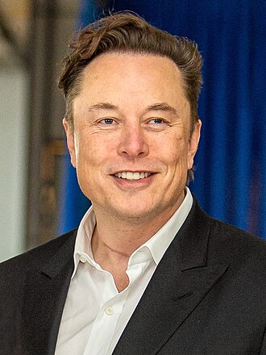

About Elon Musk
Elon Musk (1971) is a technology entrepreneur, inventor, and CEO of multiple companies.
He is best known for founding SpaceX, Tesla Motors, and co-founding PayPal.
Musk has made a significant impact on space exploration, electric vehicles, and renewable energy.
Important Life Events
- Born in Pretoria, South Africa (1971)
- Moved to the USA and co-founded Zip2 (1996)
- Co-founded PayPal (1999)
- Founded SpaceX (2002)
- Became CEO of Tesla Motors (2008)
- Launched Starship project (2018–present)
Main Contributions
- Reusable rockets (SpaceX)
- Mass-market electric cars (Tesla)
- Solar energy solutions (SolarCity)
- Neural technology (Neuralink)
← Back